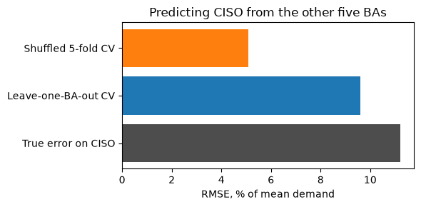
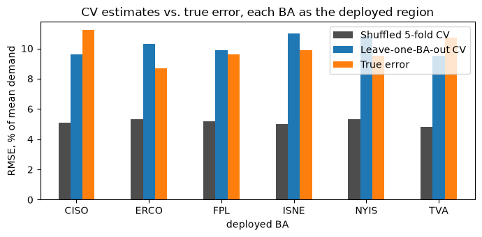

Understanding what happens with model performance estimates when data is non-i.i.d..
Providing reasonable estimators of performance in such cases.
Performing hyperparameter selection and inference on such setting.
This presentation is adapted from Erez Buchweitz’s cross validation lab.
LLM assistance was used during the elaboration of this presentation and the exercise.
1 Estimating the hold-out risk for non i.i.d. data
The discussions on last week’s lab hinged on a key assumption: that both training and test data were i.i.d. drawn from the same population. This assumption often fails in practice. The simplest failure modes are for example for data involving spatial or temporal components, both of which we will visit in today’s lab.
In a setting like this we imagine we have \(\mathcal{T} = (\boldsymbol{X}_T, \boldsymbol{y}_T)\) drawn from a distribution \(P\) over training sets, but our model will be deployed and should perform on data \((\boldsymbol{x}, y)\) which is either drawn from some distinct distribution \(Q\), and/or for which we cannot assume independence from \(\mathcal{T}\).
As a simple example (to be worked below) imagine trying to predict eletric energy consumption in different regions of the United States. Suppose we are given as training data from regions R_1,…,R_5, but our model will be deployed to predict consumption on some distinct region R_6. It could be that region R_6 differs from R_1,…,R_5 in ways which strongly violate i.i.d. assumptions. For example, if R_6 consists of only Alaska, whereas R_1,…,R_5 consists of the 5 most populous states, it seems fairly unreasonable to assumption the “identically distribution” assumption makes sense.
In cases like these, doing the standard CV estimation based on uniformly shuffling the data and splitting it into folds may fail to provide accurate out of training performance estimates. The reason for this is that:
the relation between the training and validation distributions within each split, does not faithfully mirror the relation between the full training data and the data the model will deployed on.
The fix for this is trying to make the split in such a way that this “mirroring” holds as faithfully as possible.
Another way of thinking about this informally, is that, letting \(H\) be data where the model will be deployed, and letting \(\mathcal{T}^{(-k)}\) and \(\mathcal{T}^{(k)}\) be a K-fold CV split of \(\mathcal{T}\). We want that the information which a model can reasonably extract from \(\mathcal{T}\) about \(H\) is as close as possible to the one that it can exact from \(\mathcal{T}^{(k)}\) about \(\mathcal{T}\). This in particular implies that:
which is required for reasonable error estimates (by definition). Let us see an example to make this more concrete.
2 Predicting energy consumption for distinct US regions
We have hourly electricity demand from 2023-01-01 to 2026-10-07 for six US balancing authorities (BAs). A BA is the grid operator that keeps supply and demand balanced over its area, which may be part of a state, one state or several states. The six BAs, with the two weather stations used for each:
BA
Region
Station st1
Station st2
CISO
California ISO (most of California)
Los Angeles
Sacramento
ERCO
ERCOT (most of Texas)
Dallas
Houston
FPL
Florida Power & Light (much of Florida)
Fort Myers
Miami
ISNE
ISO New England (six states)
Boston
Hartford
NYIS
New York ISO (New York State)
Albany
New York City
TVA
Tennessee Valley Authority (Tennessee and parts of neighbouring states)
Nashville
Memphis
Sources.
Demand: the EIA-930 Hourly Electric Grid Monitor, published by the U.S. Energy Information Administration with about a one-day lag. We use EIA’s cleaned adjusted demand series, because the raw series has obvious reporting errors (negative values, spikes of millions of MW). Hours outside 0.3 to 3 times the BA’s median demand are also dropped.
Weather: Open-Meteo, hourly values at each station.
Columns. One row per BA and hour (198,048 rows, about 33,000 per BA):
ba: the balancing authority.
timestamp_utc, timestamp_local: the start of the hour, in UTC and in the BA’s local time. These are for splitting and plotting, not features.
Calendar features, in local time: hour, day_of_week (0 = Monday), day_of_year, is_holiday (US federal holidays) and day_index (days since 2023-01-01).
Weather features for each station (st1_*, st2_*): temp (°C), rh (relative humidity, %), rad (solar radiation, W/m²), and tmax_24h/tmin_24h (the highest and lowest temperature over the 24 hours ending at that row).
Response: demand_mw, the BA’s demand in megawatts.
Weather is the observed value at that hour, so predictions assume a perfect weather forecast. Past demand is deliberately not included as a feature. The BAs differ a lot in size (ERCOT averages about 55,000 MW, ISO New England about 13,000 MW), so below we predict demand relative to each BA’s mean.
import pandas as pdenergy = pd.read_csv("../../datasets/cv_lab_cont/data/multi_ba.csv.gz", parse_dates=["timestamp_utc", "timestamp_local"])energy.head()
ba
timestamp_utc
timestamp_local
hour
day_of_week
day_of_year
is_holiday
day_index
st1_temp
st1_rh
st1_rad
st1_tmax_24h
st1_tmin_24h
st2_temp
st2_rh
st2_rad
st2_tmax_24h
st2_tmin_24h
demand_mw
0
CISO
2023-01-01 08:00:00
2023-01-01 00:00:00
0
6
1
0
0
13.8
96.0
0.0
15.1
13.3
9.7
82.0
0.0
14.8
8.8
22049.0
1
CISO
2023-01-01 09:00:00
2023-01-01 01:00:00
1
6
1
0
0
13.7
90.0
0.0
15.1
13.3
9.9
76.0
0.0
14.8
8.8
21298.0
2
CISO
2023-01-01 10:00:00
2023-01-01 02:00:00
2
6
1
0
0
13.1
87.0
0.0
15.1
13.1
8.7
77.0
0.0
14.8
8.7
20807.0
3
CISO
2023-01-01 11:00:00
2023-01-01 03:00:00
3
6
1
0
0
12.4
87.0
0.0
15.1
12.4
8.3
75.0
0.0
14.8
8.3
20301.0
4
CISO
2023-01-01 12:00:00
2023-01-01 04:00:00
4
6
1
0
0
11.8
85.0
0.0
15.1
11.8
8.1
69.0
0.0
14.6
8.1
19927.0
2.1 Can CV tell us how well we predict a region we never saw?
Suppose we train on five balancing authorities (BAs) and want to predict demand in a sixth, unseen one. Grids differ a lot in size, so we predict demand relative to each BA’s mean demand; errors are RMSE in percent of mean demand.
We compare three numbers, all for one fixed LightGBM configuration:
Shuffled 5-fold CV on the pooled training BAs: rows from every BA land in every fold.
Leave-one-BA-out CV: each training BA is held out in turn, mimicking the real task.
The true error: train on all five BAs, predict the held-out BA.
import lightgbm as lgbimport numpy as npfrom sklearn.model_selection import KFold, LeaveOneGroupOut, cross_val_scoretest_ba ="CISO"features = [c for c in energy.columns if c notin ("ba", "timestamp_utc", "timestamp_local", "demand_mw")]y_rel = energy["demand_mw"] / energy.groupby("ba")["demand_mw"].transform("mean")is_test = energy["ba"] == test_baX_tr, y_tr, groups = energy.loc[~is_test, features], y_rel[~is_test], energy.loc[~is_test, "ba"]X_te, y_te = energy.loc[is_test, features], y_rel[is_test]model = lgb.LGBMRegressor(learning_rate=0.05, n_estimators=500, num_leaves=31, min_child_samples=50, subsample=0.8, subsample_freq=1, colsample_bytree=0.8, random_state=0, verbose=-1)print(f"train BAs: {sorted(groups.unique())}, {len(X_tr)} rows | test BA: {test_ba}, {len(X_te)} rows")
summary = pd.DataFrame({"estimate (% of mean demand)": 100* np.array([shuffled.mean(), by_ba.mean(), true_error]),"fold range": [f"{100*shuffled.min():.1f} to {100*shuffled.max():.1f}",f"{100*by_ba.min():.1f} to {100*by_ba.max():.1f}", ""],}, index=["Shuffled 5-fold CV", "Leave-one-BA-out CV", f"True error on {test_ba}"]).round(1)summary
estimate (% of mean demand)
fold range
Shuffled 5-fold CV
5.1
5.1 to 5.2
Leave-one-BA-out CV
9.6
8.6 to 10.5
True error on CISO
11.2
import matplotlib.pyplot as pltfig, ax = plt.subplots(figsize=(6, 3))ax.barh(summary.index[::-1], summary.iloc[::-1, 0], color=["0.3", "tab:blue", "tab:orange"])ax.set_xlabel("RMSE, % of mean demand")ax.set_title(f"Predicting {test_ba} from the other five BAs")plt.tight_layout()

Shuffled CV reports roughly half the error we actually get on the new region: every test row has rows from the same BA, often from the neighbouring hours, in its training folds, so the model never has to generalise to a new grid. Leaving whole BAs out reproduces the real task and lands close to the true error, at the price of a noisy estimate (only five folds, and the folds differ a lot from one another).
2.1.1 Every region as the deployed one
One held-out region is a single draw. Repeating the experiment with each of the six BAs as the deployment target shows whether the pattern holds (this cell fits 66 models and takes a few minutes).
ax = by_region.drop("mean").plot.bar(figsize=(7, 3.5), color=["0.3", "tab:blue", "tab:orange"], rot=0)ax.set_ylabel("RMSE, % of mean demand")ax.set_title("CV estimates vs. true error, each BA as the deployed region")plt.tight_layout()

Shuffled CV is about half the true error for every region, and it barely changes with the region left out: it measures how well we interpolate within grids we have seen. Leave-one-BA-out CV is close to the true error on average, but for a single region it can be off by a point or two in either direction.
2.2 Takeaway
To grasp a little better the difference between the estimates, let us think about what each is attempting to estimate.
The shuffled CV estimate is roughly estimating the final performance of the following procedure: - take all consumption observations across all regions and time, and put them all in a bag. - draw uniformly at random a fration of the observations and fit a model to predict consumption on it. - draw another distinct fraction of the data uniformly as random and use the model to predict consumption on it.
The region aware split, on the other hand, estimates the final performance of the following procedure: - take a subset of regions and the observations of consumption on them across all time. - train a model to predict consumption on them given a set of features. - take observations from a new region and use the model to predict consumption on it.
Even though the regions available to us on the full training may differ from the region of final deployment, the within training data error estimation procedure mimics the procedure we are actually carrying and estimating the error of: we are training in a subset of regions to predict into a new region. The more closely we can mimic the specific details of this relation, the better our error estimates.
For example, if we had data from regions in both Mexico and the US, and our final deployment would be in a new region in the US, our hold-out set in the CV should also be a US and not a Mexico region, even thought we could still train regions from Mexico, as those would be plausibly present in the final training run.
3 Summary
Estimate
Unbiased for
As an estimate of the final model’s risk
Variance
Training error
not the risk (it measures the fit to the training labels)
too optimistic, worse for complex models
Validation error
risk of the model trained on \(N_{\text{train}}\) points
too pessimistic; less so as \(N_{\text{train}} \to N\)
grows as \(N_{\text{valid}}\) shrinks
\(K\)-fold CV error
expected risk of a model trained on \(N - N/K\) points
slightly pessimistic; less so as \(K\) grows
not monotone in \(K\)
In the exercise you will see each row of this table in the practice world, where you can compare every estimate with the true risk. Then you will use CV to tune LightGBM on a challenge dataset with no true risk, as in real life.